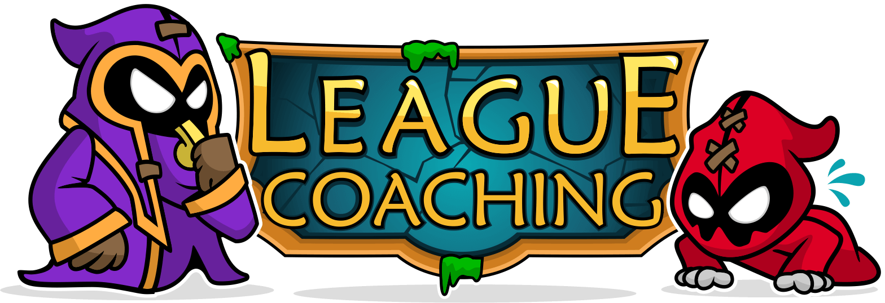

Alcançando o seu objetivo com o Rush Elo!
Notas da Atualização 7.24
Saudações, Invocadoras e Invocadores.
"Esta é (mais ou menos) a última Atualização da pré-temporada e isso significa muitos ajustes na primeira leva de dados. O jogo sempre sofre muitas alterações nesta época do ano, então queremos garantir que, quando entrarmos na próxima temporada, a maioria dos Campeões pelo menos pareçam os mesmos, e alguns talvez tenham até o potencial de fazer mais coisas.Vários Campeões estão amando as novas runas e, consequentemente, estão detonando a concorrência, enquanto outros não estão conseguindo encontrar uma Runa Essencial que cubra suas necessidades. No momento, queremos dar uma ajudinha a esses personagens e depois partiremos daí.
Algumas runas estão um pouco fortes ou fracas demais, então teremos alguns ajustes de balanceamento nessa área. Queremos ter certeza de que não vamos ter muitos Campeões fora da curva por volta de fevereiro, então teremos mais uma pequena Atualização antes disso.
Por último, faremos uma grande atualização nas barras de Vida do jogo com a intenção de aumentar a clareza e a visibilidade de alguns momentos menos visíveis do jogo."
Após esse pronunciamento da Riot, confira o que mudou de forma mais resumidamente em meu vídeo que fiz falando sobre essa mudança: